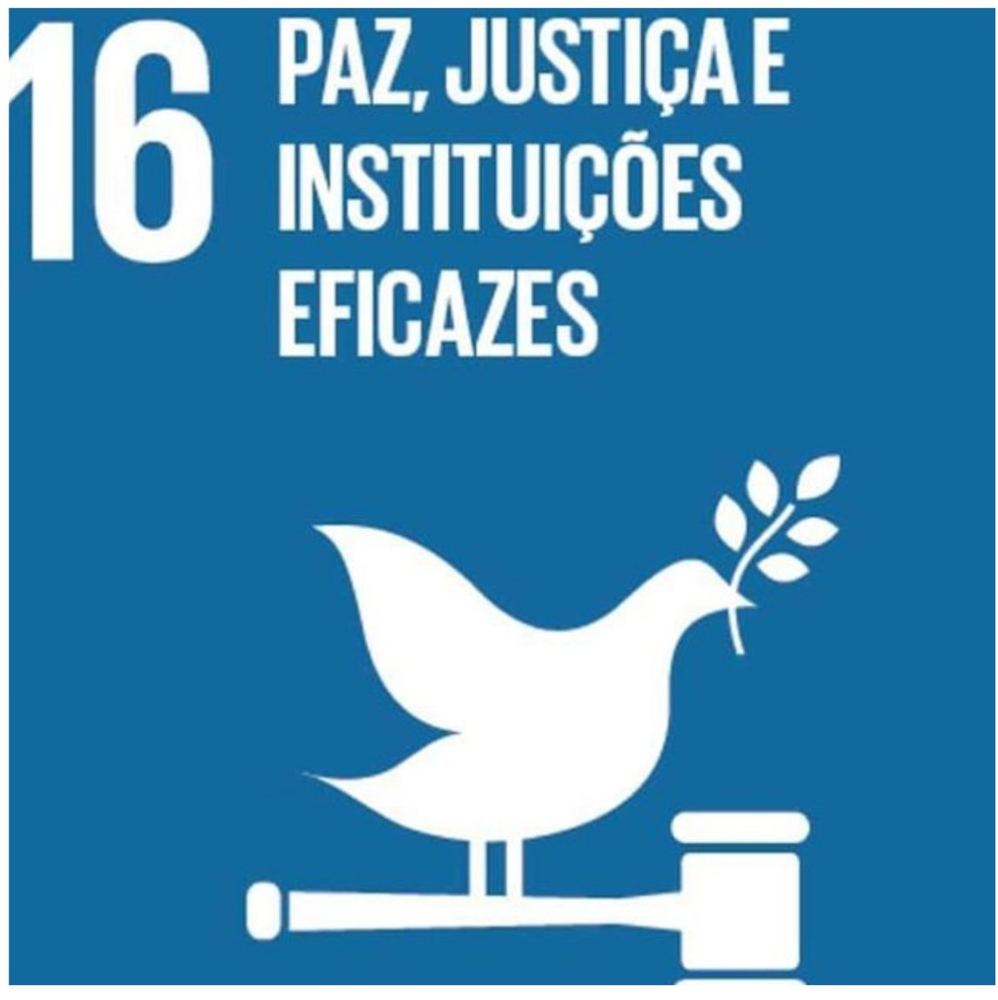
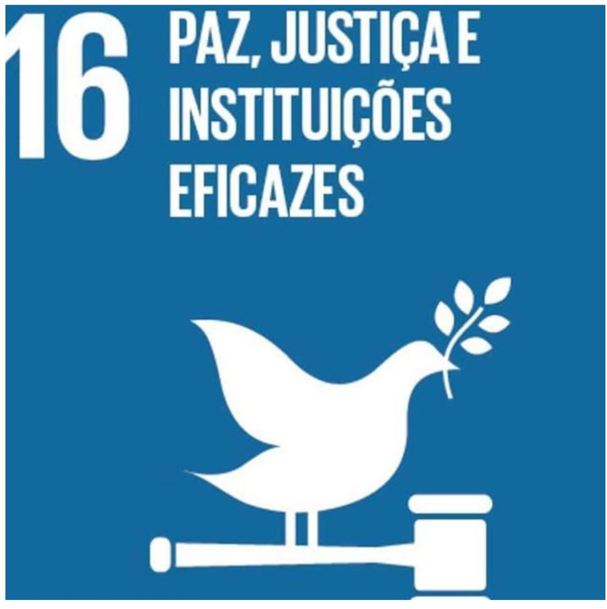
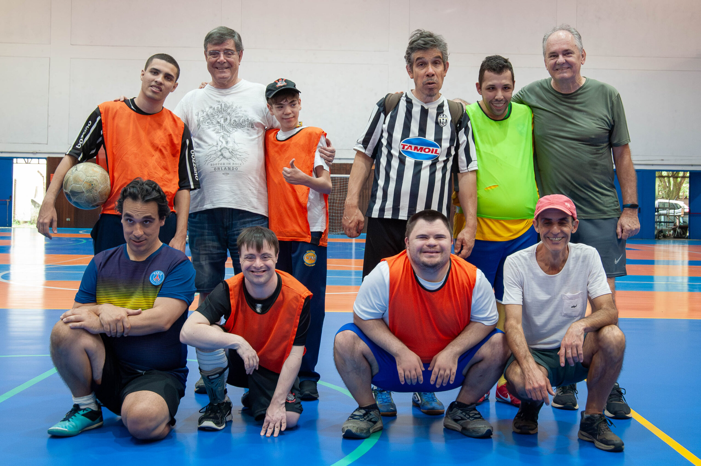
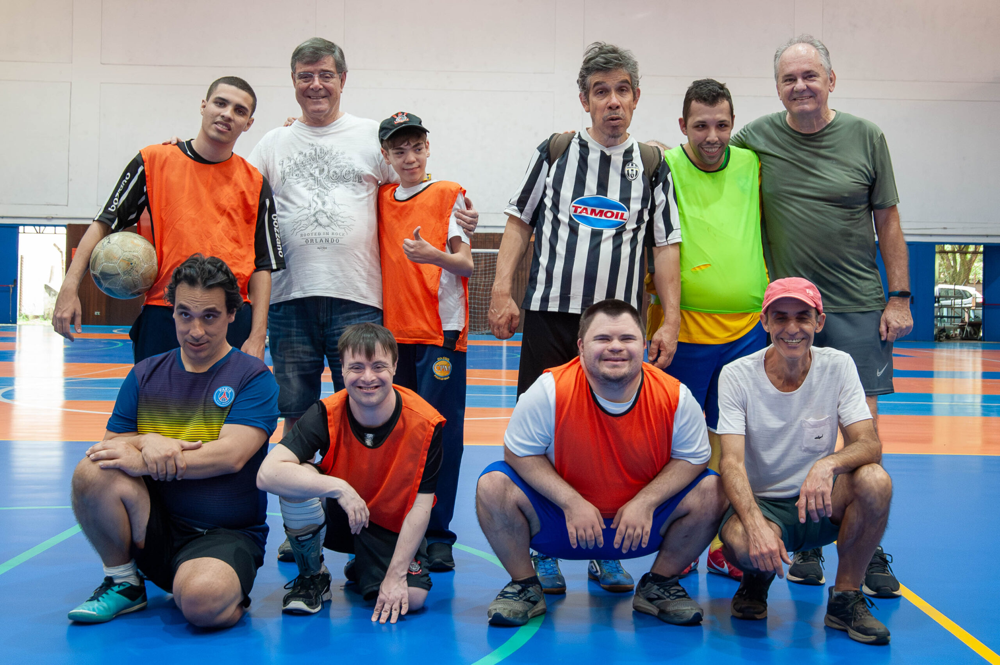
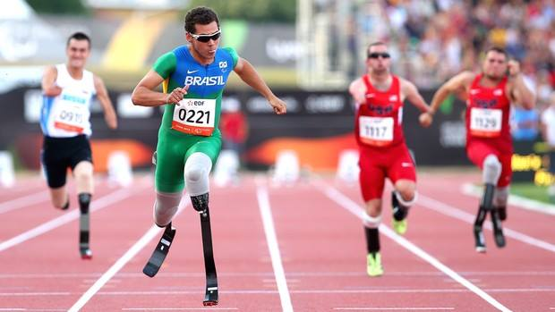
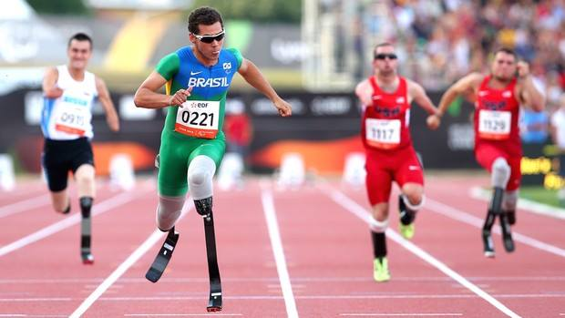

SOMOS
A FITLY
PICE
A Fitly Pice é uma organização social que atua em diversas áreas para promover a inclusão e a qualidade de vida.
A Fitly é uma organização social sem fins lucrativos que tem objetivo de promover inclusão, bem-estar e desenvolvimento humano por meio dos esportes adaptados e atividades fisioterapêuticas. Nosso principal espaço é o Parque Fitly, um ambiente acessível e acolhedor onde pessoas de todas as idades e condições físicas participam de atividades, de acordo com seus laudos. A iniciativa busca estimular hábitos saudáveis e oferecer reabilitação de forma gratuita, priorizando que esse momento seja uma experiência leve.
ODS:
OBJETIVOS DE DESENVOLVIMENTO SUSTENTÁVEL
 

ODS 03
Objetivo de Desenvolvimento Sustentável, visa garantir uma vida saudável e promover o bem-estar para todos, em todas as idades.
ODS 10
visa reduzir as desigualdades dentro e entre os países, promovendo a inclusão social, econômica e política de todos.
ODS 16
visa promover sociedades pacíficas e inclusivas, garantir o acesso à justiça para todos e construir instituições eficazes, responsáveis e inclusivas em todos os níveis.

 

 
